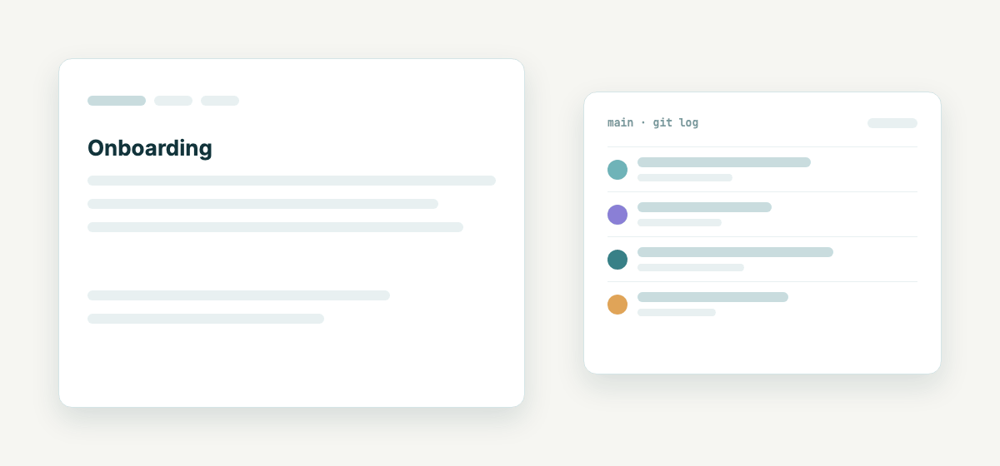
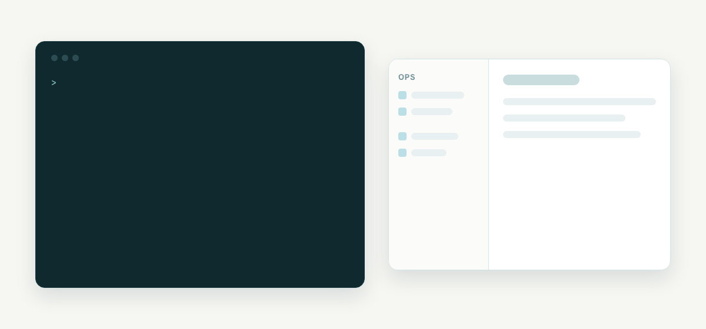
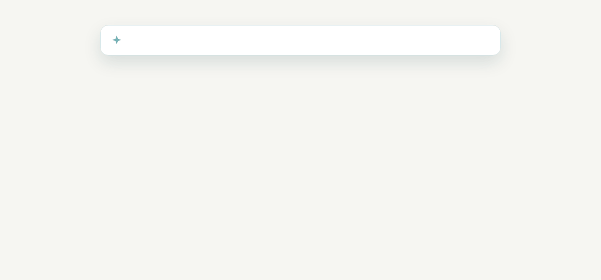
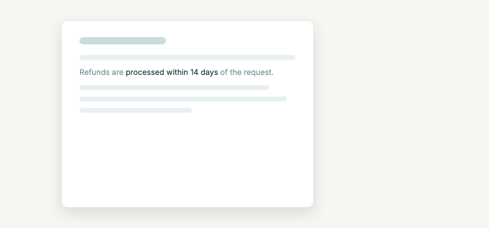
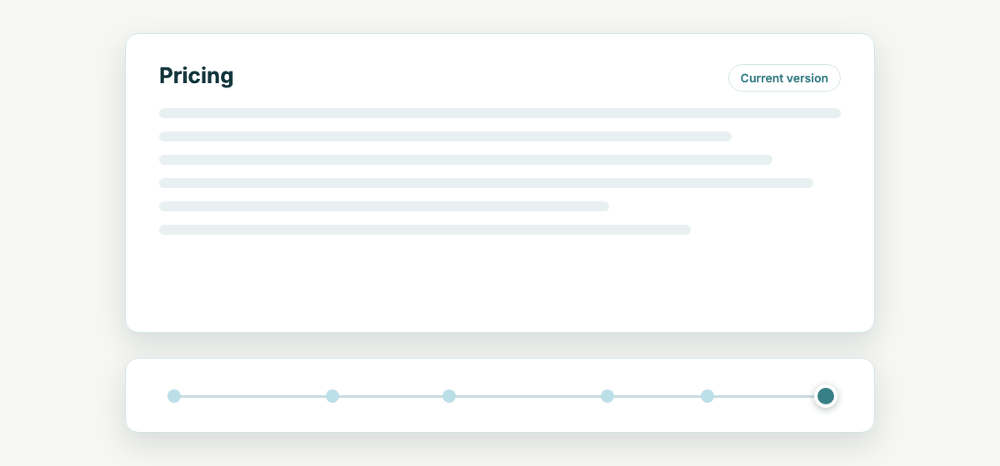
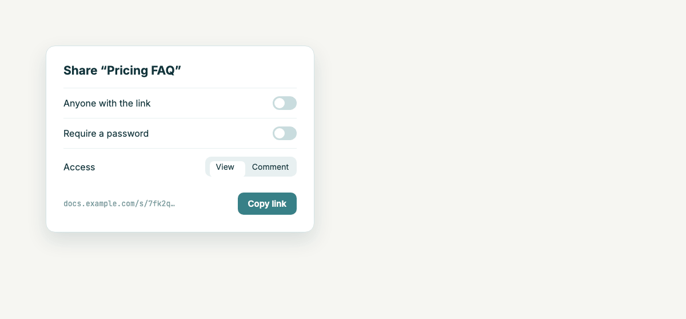
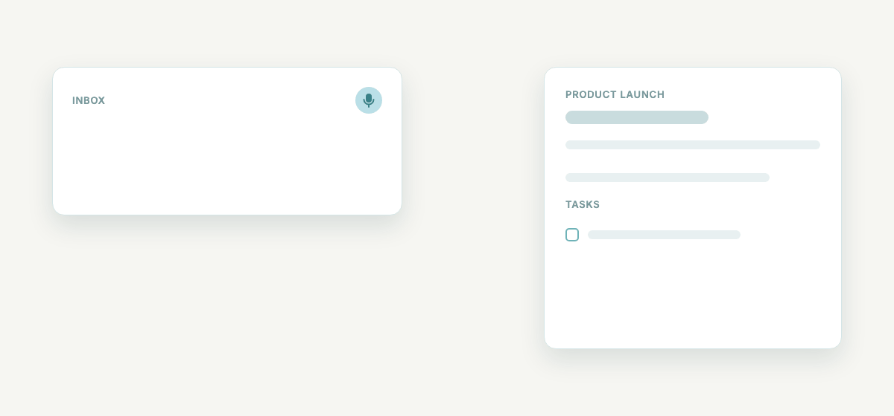
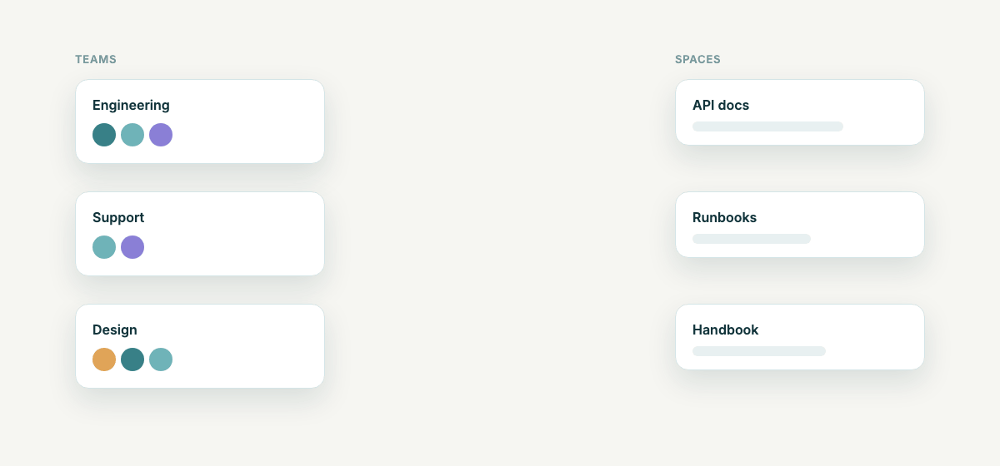

Edit in the browser and every save becomes a commit. Clone the same repo, let Claude Code or Cursor work on it, push, and the web UI shows the change. Your documents stay plain Markdown in a repository you own.

DocuVault runs its own MCP server. Connect a client with one URL, sign in once in the browser, and the agent works on documents like any other team member.
Ask Claude Code to write a runbook and it searches the space, creates the document and commits it. Everyone sees it in the web UI straight away.

Ask a question across spaces and get an answer that names its sources. Turn the answer into a new document, or let the assistant propose an edit that you apply.

Developers keep their Git workflow. Everyone else gets a WYSIWYG editor, comments, history and sharing, without ever seeing a merge conflict.
Select a phrase, comment on it, discuss it in a thread. Comments are anchored to the quoted text, not to a position, so they stay put when the page around them changes.
If the words are deleted, the comment is marked as orphaned instead of quietly disappearing.

Every space is versioned in Git, including spaces without a remote. Drag through a page’s history and see what was added and removed at each step, and by whom.
Renames and moves are tracked, so old links forward to the new location and the original author stays the author.

Create a link for people outside your team. Add a password, and choose whether they can only read or also comment.
Shared pages render embedded HTML and JavaScript on purpose, so interactive pages keep working. SECURITY.md explains the trade-off.

Type or speak a note into the inbox. The assistant suggests the space it belongs to and the tasks hiding in it. You confirm, and it lands in the right document.

Super Admin, Org Admin, Editor and Viewer, plus per-space roles. Put people in teams and give a team access to a space. New members get every grant of the team, and the strongest grant wins.

Tasks with assignee, due date and status. Create them by hand, from inbox notes, over MCP, or from meeting action items.
A TipTap editor that emits clean Markdown. HTML pages can be edited in the browser too.
Open the URL and create the first admin in the browser. No admin credentials in environment variables.
SMTP, OpenAI and GitLab are configured in the browser. Secrets are stored encrypted in the database.
Instant mails or a digest per user for changes in their spaces, plus invitations and password reset.
Optional iOS and Android apps built with Capacitor on top of the same web app.
You need a server with Docker, a DNS name and ports 80 and 443. TLS comes from Let’s Encrypt automatically.
Spring Boot and Kotlin, Angular, PostgreSQL with pgvector, Redis and MinIO, behind nginx-proxy. deploy.sh backs up, pulls, swaps and health-checks, and rolls back if the new version does not come up.
# on the server $ git clone --depth 1 https://github.com/Systaro/DocuVault.git /opt/docuvault $ cd /opt/docuvault $ cp .env.example.product .env $ $EDITOR .env $ ./deploy.sh latest
ghcr.io/systaro/docuvault, so there is no account to create and no registry login. The install guide explains every setting.One URL, then sign in once in the browser. Claude Desktop, Cursor and other clients with HTTP and OAuth support use the same URL.
$ claude mcp add --transport http docuvault \ https://docs.example.com/api/mcp # in a session: /mcp → docuvault → Authenticate
For scripts and CI, the same endpoint accepts a personal API token as a bearer header.
DocuVault is source-available under the Business Source License 1.1. Self-hosting is free. Each version turns into Apache 2.0 after four years.